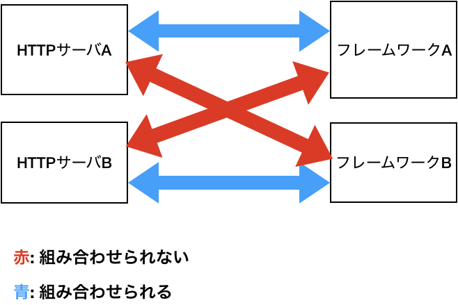
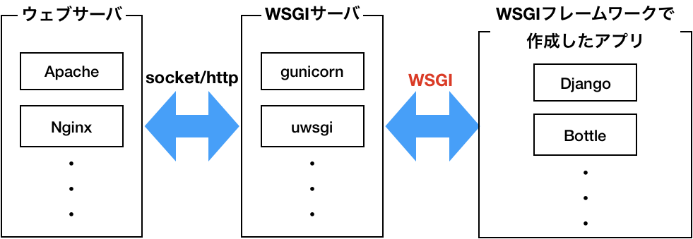
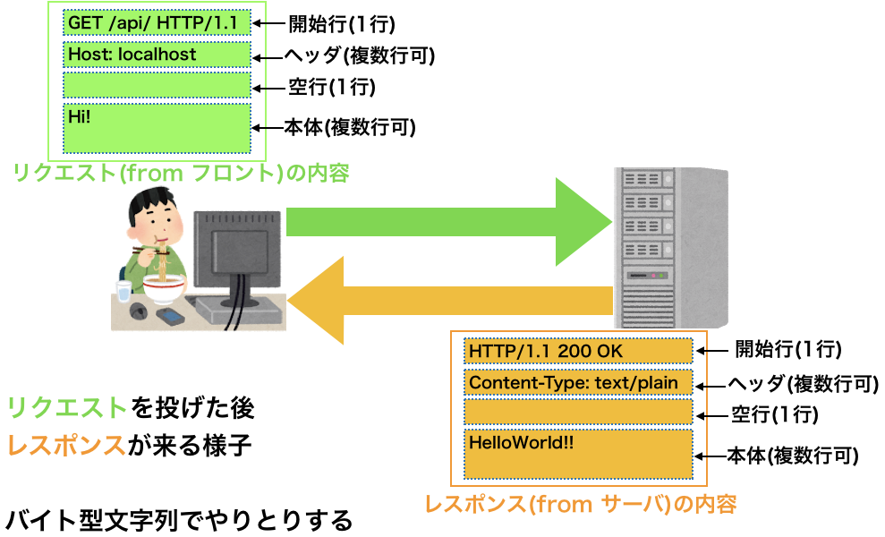
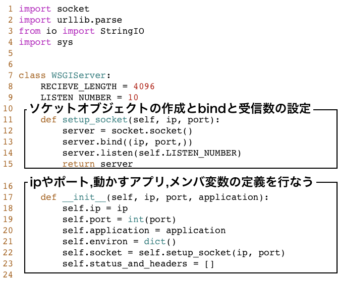
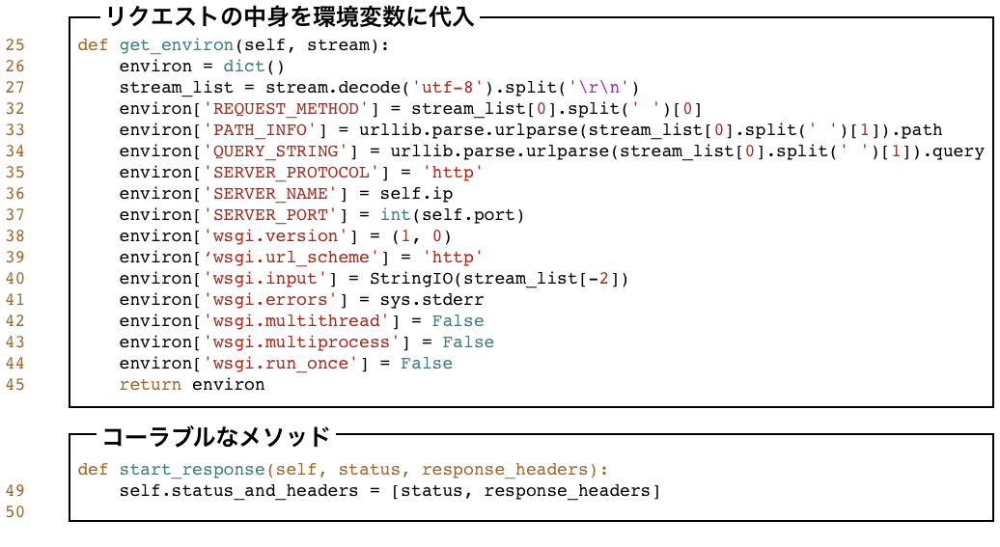
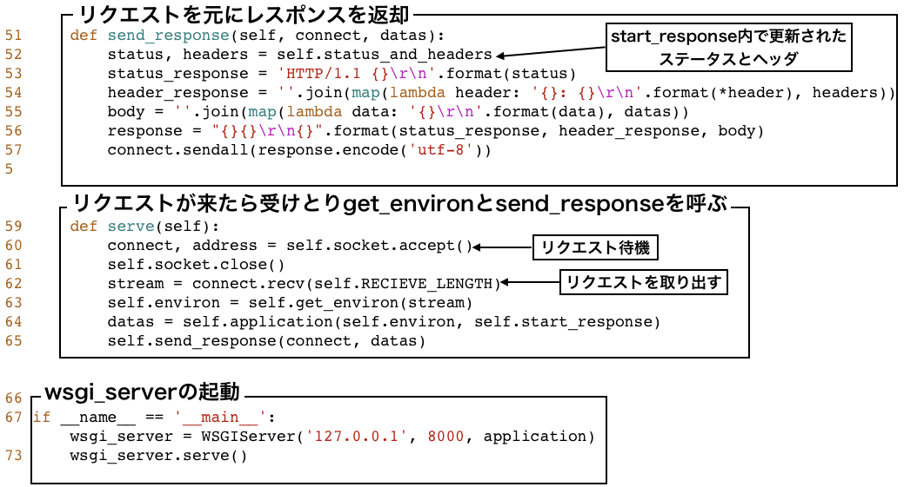

class: center, middle # WSGIアプリケーションで遊ぼう 早坂亮佑(@kuroneko1988) --- # 発表構成 - WSGIの概要 - WSGIサーバを自前で実装 - WSGIウェブフレームワークを自前で実装 --- # この発表で得られるもの - WSGIの概要 - 日頃つかっているウェブフレームワークやWSGIサーバの裏側の雰囲気がつかめる --- ## 注意 - 既存のサーバやウェブフレームワークを使わないことを推奨するものではなく単純な好奇心を満足する意味で紹介 - インターネット上で公開するサービスでは自作したものではなく既存の有名なミドルウェアを使いましょう! - 実際のソースが出てくるものの説明をするためにつくったソースで実用とはかけ離れたソースになっています --- class: center, middle # WSGIの概要 --- # PythonとWEBアプリケーション - WSGIが定義されるまでのウェブアプリケーション  - お互いのやり取りの方法が異なるので組み合わせられない --- ## WSGI(WebServerGatewayInterface)とは  - HTTPサーバとアプリケーションの間のシンプルで汎用的なインタフェース --- ## WSGI(WebServerGatewayInterface)とは - PEP3333に仕様が書かれている - 環境変数を受けとるための引数(第一引数) - ステータスコードやヘッダを返却するためのcallableなオブジェクトを受けとるための引数(第二引数) - callableとは: 関数、メソッド、または\_\_call\_\_メソッドを持つインスタンス - バイト文字列をyieldとするiterableなオブジェクトを返却(イテレータやリストなど) WSGIアプリケーションの具体例 ``` python def application(environ, start_response): start_response('200 OK', [('Content-Type', 'text/plain')]) return [b'Hello World!!'] ``` ``` python class Application: def __call__(self, environ, start_response): start_response('200 OK', [('Content-Type', 'text/plain')]) return [b'Hello World!!'] application = Application() ``` --- # 起動してみよう - gunicornの場合はファイル名:関数(またはクラスのインスタンス。ただしapplicationという名前なら省略可) ``` bash gunicorn demo_gunicorn:application ``` - wsgiref ``` python from wsgiref.simple_server import make_server def application(environ, start_response): start_response('200 OK', [('Content-Type', 'text/plain')]) return [b'Hello World!!'] with make_server('', 8000, application) as httpd: httpd.serve_forever() ``` --- # WSGIの環境変数 - CGI環境変数(必須) - WSGI定義変数(必須) - OSの環境変数(任意) が含まれている https://www.python.org/dev/peps/pep-3333/#environ-variables --- # callableなオブジェクト - callableなオブジェクトに渡す引数 ``` python start_response(ステータス文字列, レスポンスヘッダ, exc_info=None) ``` - ステータス文字列: "200 OK"のようなRFC2616で定義されている文字列(https://triple-underscore.github.io/RFC2616-ja.html#section-10.2.1) - レスポンスヘッダ: [("ヘッダ名", "ヘッダ値"),]のようなタプルのリスト - exc_info: エラーを出したときにつかう。 --- # 返り値 - バイト文字列をyieldとするiterableなオブジェクトを返却(イテレータやリストなど) - WSGIでよく使われるiterableな例としてリストやタプルがある ``` python return [b'hello world!!'] ``` --- # WSGI概要まとめ - 第一引数として環境変数(WSGI独自の環境変数とCGIの環境変数、OSの環境変数からなっている) - 第二引数としてcallableなオブジェクトを引数にとる - 返り値としてバイト文字列を含んだイテラブルなオブジェクト(リストやタプル)を指定する - 上記の条件を満たせばWSGIアプリケーション --- class: center, middle # WSGIサーバを自前で実装 --- ## サーバ実装の前に(通信のやり取り)  --- ## 非実用的なWSGIサーバの実装 1 socketを開いて待機(IPやポートは指定される) 2 リクエストが来たらリクエスト内容をWSGI環境変数にパース 3 環境変数と定義したcallableなメソッドをWSGIアプリケーションに渡す 4 WSGIアプリケーションの返り値とcallableなメソッドで更新されたステータスとヘッダをソケットをつかって返却 --- ## 実装1  --- ## 実装2  --- ## 実装3  --- ## bottleでつくったWSGIアプリケーションを動かす ``` python from bottle import route, default_app @route('/') def hello(): return 'hello world!!' application = default_app() ``` ``` python python3 wsgi_server.py ``` --- ## WSGIサーバ実装のまとめ - 簡単なWSGIサーバを紹介した - 内容 - socketを開いてリクエストを待機 - リクエストで来たデータを環境変数にパースしてWSGIアプリケーションの関数に環境変数とcallableなオブジェクトを渡す - tcpでWSGIアプリケーションの返り値とステータスコード、ヘッダを送信するようにする - スレッドを増やすとか環境変数を充実させるなど改善の余地しかないので興味があれば自分でつくってみましょう --- class: center, middle # WSGIウェブフレームワーク自作 --- ## 使い方 ``` python from pyconminisap import PyconMiniSap def hello(environ): return "200 OK", "Hello さっぽろ!!", [('Content-Type', 'text/html')] def show_ham(environ): id = environ['PATH_INFO'].split('/hams/')[1] return "200 OK", "IDとして{}を指定しましたね".format(id), [('Content-Type', 'text/html')] def show_data(environ): content_length = int(environ.get('CONTENT_LENGTH', 0)) data = environ.get('wsgi.input').read(content_length).decode('utf8') return "200 OK", "Hello {}".format(data), [('Content-Type', 'text/html')] application = PyconMiniSap() application.router.add_url_pattern('/', 'GET', hello) application.router.add_url_pattern('/hams/:ham_id/', 'GET', show_ham) application.router.add_url_pattern('/post_data/', 'POST', show_data) ``` --- ## アプリケーションを起動 ``` sh gunicorn hello:application ``` --- ## WSGIウェブフレームワークの簡易実装 - Routerクラス: ルーティングを追加参照する - PyconMiniSap: フレームワーク本体。Routerクラスのインスタンスも持っている --- ## PyconMiniSap - \_\_call\_\_で環境変数とcallableなオブジェクトを受けとるようにしている - \_\_init\_\_でインスタンス生成時にRouterのインスタンスを持つようにしている ``` python class PyconMiniSap: def __init__(self): self.router = Router() def __call__(self, environ, start_response): # 指定されたPATHとメソッドを渡して対応するview関数を呼び出す view = self.router.search(environ['PATH_INFO'], environ['REQUEST_METHOD']) if view is not None: status_code, body, header = view(environ) else: status_code, body, header = ('404 Not Found', '', [('Content-Type', 'text/html')]) start_response(status_code, header) return [body.encode('utf8')] ``` --- ## Router - add_url_pattern: URLとメソッドをview関数と紐づけるメソッド - search: URLとメソッドからview関数を調べるメソッド ``` python import re class Router: url_patterns = [] def add_url_pattern(self, path, method, view): # :fooのようにIDが指定されている部分を正規表現に置き換える for key in re.findall(':[a-zA-Z_]*', path): path = path.replace(key, '([a-z-A-Z0-9_]+)') path += '?' if path[-1] == '/' else path + '/?' # /があっても無くてもマッチできるようにする path = '^' + path + '$' # 開始と終わりを示す文字を追加 self.url_patterns.append(dict(path=path, method=method, view=view)) def search(self, path, method): for url_pattern in self.url_patterns: if bool(re.match(url_pattern['path'], path)) is True and url_pattern['method'] == method: return url_pattern['view'] return None ``` --- ## WSGIフレームワークのまとめ - ルーティング機能しかないフレームワークを紹介 - RouterクラスとPyconMiniSapクラスのみのシンプル構成 - レスポンスの返却を簡単にするための機能追加など改善の余地しかないので興味のある方はつくってみましょう --- # 全体まとめ - WSGIについて紹介 - WSGIサーバとWSGIウェブフレームワークの紹介 - 意外とフレームワークやサーバだいぶ妥協すれば作れなくもないので是非つくってみましょう - 既存OSSの実装もPythonなら読み易いので是非読んでみましょう!